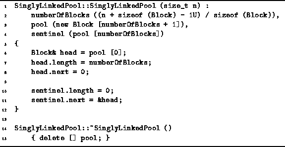
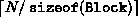

Data Structures and Algorithms
with Object-Oriented Design Patterns in C++
Data Structures and Algorithms
with Object-Oriented Design Patterns in C++
Program  defines both the constructor and the destructor
for the SinglyLinkedPool class.
The constructor takes a single argument of type sizet
which specifies the desired size of the storage pool in bytes.
Initially, the entire storage pool is empty.
Therefore, the entire pool constitutes a single area
and the free list contains a single entry.
defines both the constructor and the destructor
for the SinglyLinkedPool class.
The constructor takes a single argument of type sizet
which specifies the desired size of the storage pool in bytes.
Initially, the entire storage pool is empty.
Therefore, the entire pool constitutes a single area
and the free list contains a single entry.

Program: SinglyLinkedPool Class Constructor and Destructor Definitions
The three member variables of the SinglyLinkedPool class are
defined in Program .
The numberOfBlocks variable records the total number of
blocks in the storage pool that are available to be allocated.
The pool variable points to the array of blocks that make
up the storage pool.
Finally, the sentinel variable refers to an extra block
that is used as the sentinel for the free list.
The constructor initializes the member variables as follows:
The numberOfBlocks is set to ,
where N is the desired size of the storage pool in bytes.
The pool member variable is set to point at
an array of Blocks of length  .
The array is itself dynamically allocated using operator new!
.
The array is itself dynamically allocated using operator new!
The extra block allocated at the end of the array is used as the sentinel for the free list. Therefore, the sentinel member variable is initialized in the constructor as a reference to the last array element. A sentinel is used because it simplifies the linked-list manipulations by eliminating some of the conditional tests that would otherwise be needed.
Initially, the entire pool constitutes a single unallocated area. The entire area is represented by the first block in the pool, pool[0]. Therefore, the length field of the first block is set to numberOfBlocks and the block is linked into the free list by attaching it to the sentinel. Except for the call to operator new to acquire the pool in the first place, the worst-case running time of the constructor is O(1).
The destructor is quite simple. It simply releases the storage pool that was dynamically allocated in the constructor. Notice that it is not necessary that all storage acquired from the pool be released before the destructor is invoked. For example, the programmer may have deliberately chosen not to release the storage or she may have unintentionally forgotten to release the storage (called a memory leak). In any event, after the pool has been finalized, it is a serious error to attempt to dereference a pointer to an area in that pool.
 Copyright © 1997 by Bruno R. Preiss, P.Eng. All rights reserved.
Copyright © 1997 by Bruno R. Preiss, P.Eng. All rights reserved.